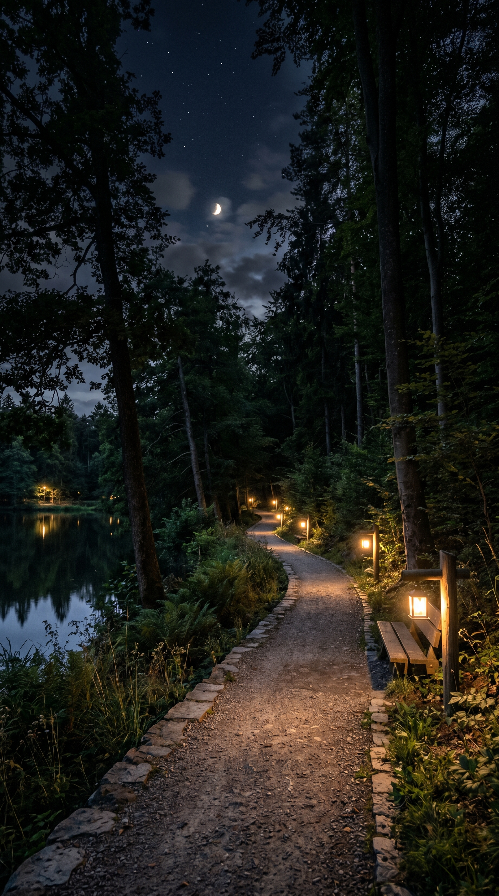

Galeria

JOVI AI - Análise de Foto
lightbulb
Iluminação
A luz de fundo está um pouco estourada. Na próxima captura, tente posicionar o assunto a favor da luz ou ative o modo HDR para equilibrar as sombras.
grid_on
Composição
O objeto centralizado ficou ótimo, mas enquadrá-lo utilizando a regra dos terços (na interseção da direita) traria uma profundidade mais artística.
psychology
Dica do Jovi AI
Experimente dar um toque longo na tela para travar o foco e a exposição (Bloqueio AE/AF) antes de disparar. Isso evitará desfoques acidentais em caso de movimento.